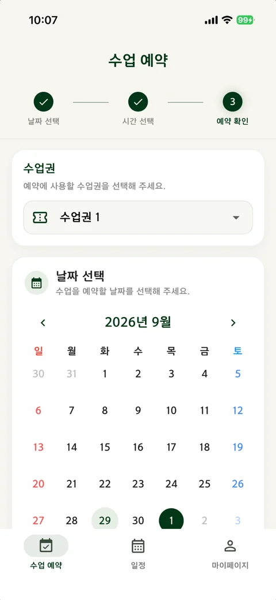
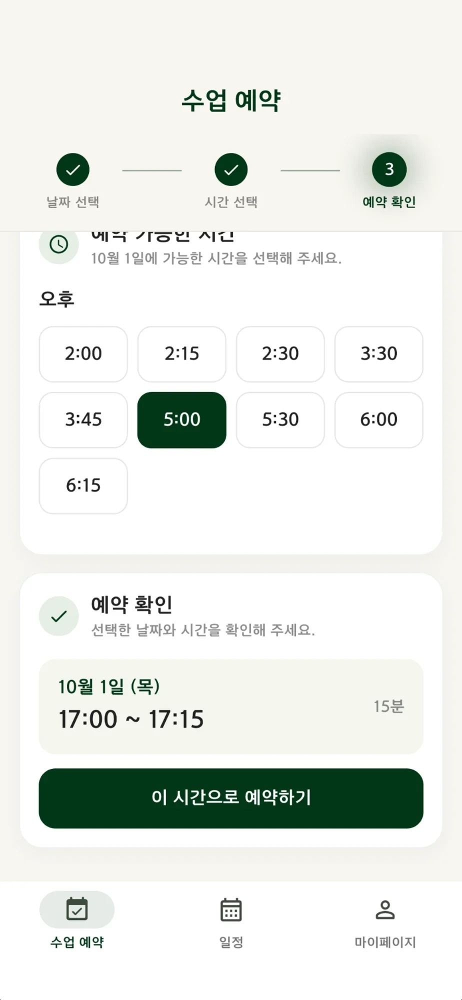
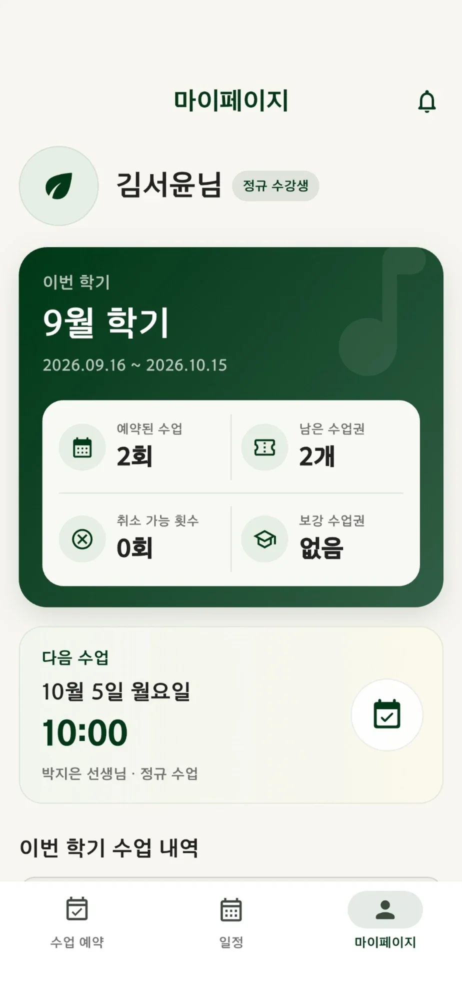
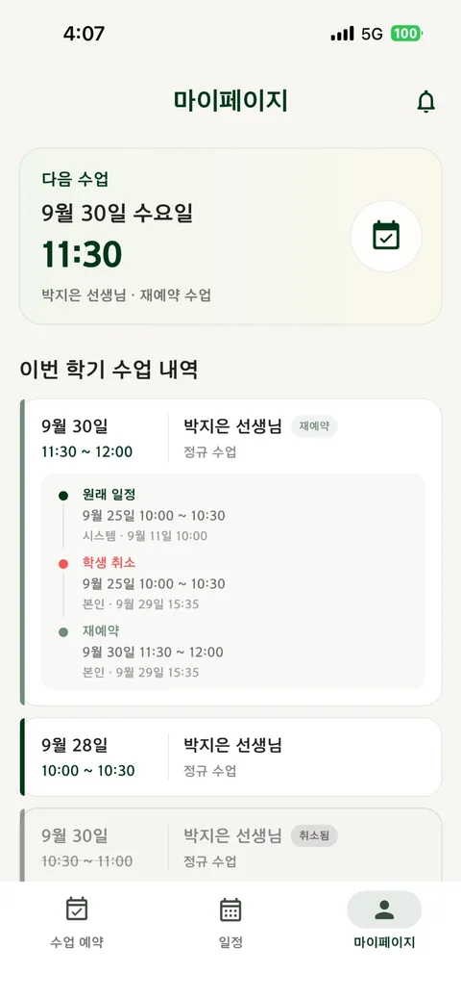

01. 유연한 예약을 감당해야 하는 학원
바이올린 레슨은 모든 수강생이 같은 시간표대로 움직이지 않았습니다. 매주 고정된 시간에 수업을 듣는 사람도 있지만, 일정이 유동적인 수강생은 빈 시간에 수업을 예약하고 필요에 따라 취소하거나 보강해야 했습니다.
원장님이 이런 운영을 모바일에서 처리할 수 있도록 앱 개발을 요청했고, 당시 앱 개발과 배포 경험이 없던 저는 Flutter를 선택해 선생님용과 학생용 앱을 만들었습니다.
화면에 달력 하나를 표시하는 것이 아니라, 수강생·선생님·수업·학기·취소·보강이 서로 충돌하지 않도록 운영 규칙을 설계하는 일이었습니다.
02. 혼자 담당한 범위
요구사항 정리, 데이터 구조, Flutter 화면, 로그인·권한, 수업 생성 및 변경 로직, 앱스토어 배포, 장애 대응까지 한 사람이 관리했습니다. 각 역할의 화면은 다르지만 동일한 데이터를 사용하도록 구성했습니다.
Flutter 클라이언트는 화면과 입력을 담당하고, 데이터 접근 범위는 RLS로, 수업권 사용 등 중요한 변경 규칙은 RPC·서버 로직으로 검증합니다.
수업 일정, 수강생, 선생님, 지점, 학기와 휴원 정보를 역할에 맞게 조회·관리합니다.
본인 수업을 조회하고, 취소 가능 조건에 따라 취소한 뒤 반환된 수업권으로 보강을 예약합니다.
PostgreSQL 관계와 제약조건, RLS·RPC, 자동 일정 생성, 마이그레이션과 사후 데이터 검증을 담당합니다.
학생 앱 주요 화면




앱 심사용 계정으로 촬영한 현행 화면이며 실제 수강생 정보는 포함하지 않았습니다.
03. 운영이 바꿔 놓은 기술적 판단
반복된 수업 생성 오류와 시간 처리
초기 앱에서는 휴원 기간과 정규 수업 생성 시점이 맞물릴 때 일정이 누락되거나 잘못 생성되는 문제가 발생했습니다. DB에 UTC로 기록된 시간을 읽고 날짜를 비교할 때 KST 기준 날짜로 올바르게 해석하지 못하면 휴원 경계 계산이 어긋날 수 있었습니다.
한 번의 버그 수정에서 끝내지 않고, 날짜 처리 기준이 여러 클라이언트 로직에 흩어져 있다는 점을 함께 살펴보게 됐습니다. 기능이 늘 때마다 앱에서 예외를 추가하는 방식은 유지 보수하기 어려웠습니다.
Firebase에서 PostgreSQL 중심 구조로
Firebase Firestore는 MVP를 빠르게 개발할 때 유용했습니다. 그러나 수강생·수업·수업권 사이의 관계를 조회하고 검증하는 과정에서는 중첩 문서 구조와 분산된 변경 로직이 디버깅의 부담이 되었습니다.
Supabase/PostgreSQL로 이전하면서 관계와 제약조건을 명시적으로 표현하고, 클라이언트가 직접 처리하던 중요한 변경을 RPC와 서버 측 검증으로 옮겼습니다. 단순한 기술 교체가 아니라 데이터 모델과 수정 권한을 다시 설계한 작업이었습니다.
수업 생성, 취소, 보강, 학기 전환, 퇴원 처리처럼 여러 테이블이 함께 바뀌는 작업은 앱이 아니라 DB 함수 안에서 한 번에 처리하고, 누가 언제 무엇을 바꿨는지 감사 로그에 남깁니다. 학기 전환과 퇴원·퇴사 확정은 매일 밤 정기 작업이 자동으로 수행합니다.
취소와 보강은 별개의 버튼이 아니라 하나의 권리가 변화하는 과정입니다. UI 외에도 데이터베이스에서 중복 사용과 잘못된 상태 변경을 방지하도록 설계했습니다.
04. 장애 추적 사례: 매일 밤 실패하던 학기 자동 전환
다음 학기 수업을 미리 만들어 두는 야간 자동 작업이 9월 말부터 같은 학생 2명에 대해 매일 실패를 기록하고 있었습니다. 화면에는 아직 문제가 보이지 않았지만, 그대로 두면 다음 학기에 두 학생의 수업만 생성되지 않는 상황이었습니다.
9/30부터 10/20까지 두 학생에 대해 "강사 근무시간 밖의 정규 수업" 오류가 매일 반복되어 감사 로그에 42건 쌓여 있었습니다.
오류 코드 → 두 학생의 정규 일정 → 담당 강사의 근무시간 변경 이력 순서로 추적했습니다. 두 학생 모두 같은 강사의 금요일 저녁 수업(18:45, 19:15 시작)이었습니다.
근무시간은 적용 시작일별 버전으로 관리됩니다. 미리 저장해 둔 "10/4부터 금요일 19:00까지" 버전이, 이후 9/18에 금요일을 19:30까지로 고친 내용을 10/4부터 다시 덮어쓰고 있었습니다.
실제 운영에 맞게 해당 버전의 금요일 종료 시각을 19:30으로 바로잡고 수정 내역을 감사 로그에 남겼습니다. 이후 그 강사의 예정 수업 961건이 모두 근무시간 안에 들어오는지 쿼리로 확인했습니다.
근무시간을 줄일 때 이미 잡힌 수업과 겹치면 경고하고, 뒤 날짜에 예약된 버전이 있으면 저장 전에 알려 주도록 관리 화면을 보완할 계획입니다. 데이터 한 건을 고치는 것보다 같은 실수가 다시 들어오지 않게 막는 쪽이 더 중요하다고 봤습니다.
05. 사용자가 요청한 기능보다, 요청의 이유
‘수업을 더 쉽게 수정하고 싶다’는 요구를 화면의 수정 버튼 개선으로만 받아들이면 문제를 충분히 해결하지 못합니다. 어떤 수강생에게는 고정된 정규 일정 자체가 맞지 않았기 때문입니다.
이 경험을 계기로 고정 수업이 없는 상태에서 수업권을 기반으로 예약하는 흐름을 지원하도록 데이터 모델을 확장했습니다. 기능을 구현하는 것에서 출발해, 사용자가 수정 작업을 반복해야 하는 원인을 제거하려고 한 결정이었습니다.
06. 배운 점
처음에는 앱이 실행되고 화면이 보이면 개발이 끝났다고 생각했습니다. 운영을 거치면서는 한 기능이 아니라 전체 서비스가 일관된 상태를 유지하는가를 먼저 살피게 됐습니다.
1인 개발은 모든 결정을 혼자 해야 하는 부담이 있었지만, 사용자 요구부터 데이터 모델과 출시 후 문제까지 서로 어떻게 연결되는지 살펴볼 수 있는 경험이기도 했습니다.